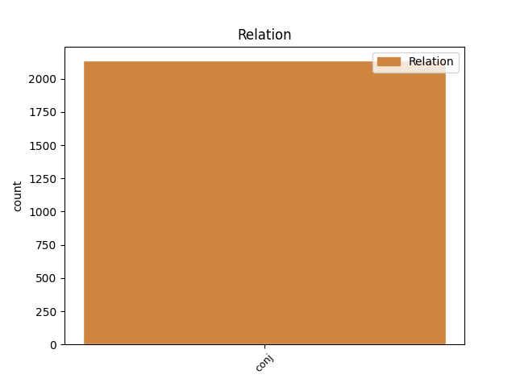
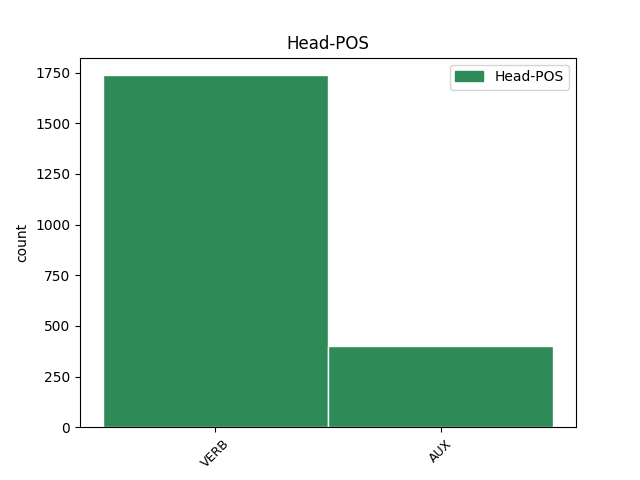

Distribution of features within this leaf


Agreement Rules sorted by frequency.
- When the dependent token is the conjunct(conj) of the head token,
1 si _ _ _ _ 0 _ _ _
2 autem _ _ _ _ 0 _ _ _
3 secundum _ _ _ _ 0 _ _ _
4 aliquid _ _ _ _ 0 _ _ _
5 sui _ _ _ _ 0 _ _ _
6 sit _ _ _ _ 0 _ _ _
7 forma _ _ _ _ 0 _ _ _
8 , _ _ _ _ 0 _ _ _
9 id _ _ _ _ 0 _ _ _
10 quod _ _ _ _ 0 _ _ _
11 est _ _ _ _ 0 _ _ _
12 forma _ _ _ _ 0 _ _ _
13 dicimus dico VERB N3|modA|tem1|gen7 Mood=Ind|Number=Plur|Person=1|Tense=Pres|VerbForm=Fin|Voice=Act 0 _ _ _
14 animam _ _ _ _ 0 _ _ _
15 , _ _ _ _ 0 _ _ _
16 et _ _ _ _ 0 _ _ _
17 id _ _ _ _ 0 _ _ _
18 cuius _ _ _ _ 0 _ _ _
19 est _ _ _ _ 0 _ _ _
20 forma _ _ _ _ 0 _ _ _
21 dicimus dico VERB N3|modA|tem1|gen7 Mood=Ind|Number=Plur|Person=1|Tense=Pres|VerbForm=Fin|Voice=Act 13 conj _ _
22 primum _ _ _ _ 0 _ _ _
23 animatum _ _ _ _ 0 _ _ _
24 , _ _ _ _ 0 _ _ _
25 ut _ _ _ _ 0 _ _ _
26 supra _ _ _ _ 0 _ _ _
27 dictum _ _ _ _ 0 _ _ _
28 est _ _ _ _ 0 _ _ _
29 . _ _ _ _ 0 _ _ _
Disagree Examples:
1 erit _ _ _ _ 0 _ _ _
2 autem _ _ _ _ 0 _ _ _
3 hic _ _ _ _ 0 _ _ _
4 prosecutionis _ _ _ _ 0 _ _ _
5 ordo _ _ _ _ 0 _ _ _
6 , _ _ _ _ 0 _ _ _
7 ut _ _ _ _ 0 _ _ _
8 primo _ _ _ _ 0 _ _ _
9 agamus ago VERB L3|modB|tem1|gen7 Mood=Sub|Number=Plur|Person=1|Tense=Pres|VerbForm=Fin|Voice=Act 0 _ _ _
10 de _ _ _ _ 0 _ _ _
11 productione _ _ _ _ 0 _ _ _
12 rerum _ _ _ _ 0 _ _ _
13 in _ _ _ _ 0 _ _ _
14 esse _ _ _ _ 0 _ _ _
15 ; _ _ _ _ 0 _ _ _
16 secundo _ _ _ _ 0 _ _ _
17 , _ _ _ _ 0 _ _ _
18 de _ _ _ _ 0 _ _ _
19 earum _ _ _ _ 0 _ _ _
20 distinctione _ _ _ _ 0 _ _ _
21 ; _ _ _ _ 0 _ _ _
22 tertio _ _ _ _ 0 _ _ _
23 vero _ _ _ _ 0 _ _ _
24 de _ _ _ _ 0 _ _ _
25 ipsarum _ _ _ _ 0 _ _ _
26 rerum _ _ _ _ 0 _ _ _
27 productarum _ _ _ _ 0 _ _ _
28 et _ _ _ _ 0 _ _ _
29 distinctarum _ _ _ _ 0 _ _ _
30 natura _ _ _ _ 0 _ _ _
31 , _ _ _ _ 0 _ _ _
32 quantum _ _ _ _ 0 _ _ _
33 ad _ _ _ _ 0 _ _ _
34 fidei _ _ _ _ 0 _ _ _
35 pertinet pertineo VERB K3|modA|tem1|gen6 Mood=Ind|Number=Sing|Person=3|Tense=Pres|VerbForm=Fin|Voice=Act 9 conj _ _
36 veritatem _ _ _ _ 0 _ _ _
37 . _ _ _ _ 0 _ _ _
1 cum _ _ _ _ 0 _ _ _
2 autem _ _ _ _ 0 _ _ _
3 potentia _ _ _ _ 0 _ _ _
4 deo _ _ _ _ 0 _ _ _
5 conveniat _ _ _ _ 0 _ _ _
6 respectu _ _ _ _ 0 _ _ _
7 suorum _ _ _ _ 0 _ _ _
8 effectuum _ _ _ _ 0 _ _ _
9 ; _ _ _ _ 0 _ _ _
10 potentia _ _ _ _ 0 _ _ _
11 autem _ _ _ _ 0 _ _ _
12 rationem _ _ _ _ 0 _ _ _
13 principii _ _ _ _ 0 _ _ _
14 habeat habeo VERB K3|modB|tem1|gen6 Mood=Sub|Number=Sing|Person=3|Tense=Pres|VerbForm=Fin|Voice=Act 0 _ _ _
15 , _ _ _ _ 0 _ _ _
16 ut _ _ _ _ 0 _ _ _
17 dictum _ _ _ _ 0 _ _ _
18 est _ _ _ _ 0 _ _ _
19 ; _ _ _ _ 0 _ _ _
20 principium _ _ _ _ 0 _ _ _
21 autem _ _ _ _ 0 _ _ _
22 relative _ _ _ _ 0 _ _ _
23 ad _ _ _ _ 0 _ _ _
24 principiatum _ _ _ _ 0 _ _ _
25 dicitur dico VERB N3|modJ|tem1|gen6 Mood=Ind|Number=Sing|Person=3|Tense=Pres|VerbForm=Fin|Voice=Pass 14 conj _ SpaceAfter=No
26 : _ _ _ _ 0 _ _ _
27 manifestum _ _ _ _ 0 _ _ _
28 est _ _ _ _ 0 _ _ _
29 quod _ _ _ _ 0 _ _ _
30 aliquid _ _ _ _ 0 _ _ _
31 relative _ _ _ _ 0 _ _ _
32 potest _ _ _ _ 0 _ _ _
33 dici _ _ _ _ 0 _ _ _
34 de _ _ _ _ 0 _ _ _
35 deo _ _ _ _ 0 _ _ _
36 in _ _ _ _ 0 _ _ _
37 respectu _ _ _ _ 0 _ _ _
38 suorum _ _ _ _ 0 _ _ _
39 effectuum _ _ _ _ 0 _ _ _
40 . _ _ _ _ 0 _ _ _
1 cum _ _ _ _ 0 _ _ _
2 igitur _ _ _ _ 0 _ _ _
3 ostensum _ _ _ _ 0 _ _ _
4 sit _ _ _ _ 0 _ _ _
5 quod _ _ _ _ 0 _ _ _
6 non _ _ _ _ 0 _ _ _
7 sint sum VERB N3|modB|tem1|gen9 Mood=Sub|Number=Plur|Person=3|Tense=Pres|VerbForm=Fin|Voice=Act 0 _ _ _
8 in _ _ _ _ 0 _ _ _
9 ipso _ _ _ _ 0 _ _ _
10 realiter _ _ _ _ 0 _ _ _
11 , _ _ _ _ 0 _ _ _
12 et _ _ _ _ 0 _ _ _
13 tamen _ _ _ _ 0 _ _ _
14 dicuntur dico VERB N3|modJ|tem1|gen9 Mood=Ind|Number=Plur|Person=3|Tense=Pres|VerbForm=Fin|Voice=Pass 7 conj _ _
15 de _ _ _ _ 0 _ _ _
16 eo _ _ _ _ 0 _ _ _
17 , _ _ _ _ 0 _ _ _
18 relinquitur _ _ _ _ 0 _ _ _
19 quod _ _ _ _ 0 _ _ _
20 et _ _ _ _ 0 _ _ _
21 attribuantur _ _ _ _ 0 _ _ _
22 solum _ _ _ _ 0 _ _ _
23 secundum _ _ _ _ 0 _ _ _
24 intelligentiae _ _ _ _ 0 _ _ _
25 modum _ _ _ _ 0 _ _ _
26 , _ _ _ _ 0 _ _ _
27 ex _ _ _ _ 0 _ _ _
28 eo _ _ _ _ 0 _ _ _
29 quod _ _ _ _ 0 _ _ _
30 alia _ _ _ _ 0 _ _ _
31 referuntur _ _ _ _ 0 _ _ _
32 ad _ _ _ _ 0 _ _ _
33 ipsum _ _ _ _ 0 _ _ _
34 . _ _ _ _ 0 _ _ _
1 non _ _ _ _ 0 _ _ _
2 igitur _ _ _ _ 0 _ _ _
3 alia _ _ _ _ 0 _ _ _
4 creatione _ _ _ _ 0 _ _ _
5 opus _ _ _ _ 0 _ _ _
6 est sum VERB N3|modA|tem1|gen6 Mood=Ind|Number=Sing|Person=3|Tense=Pres|VerbForm=Fin|Voice=Act 0 _ _ _
7 , _ _ _ _ 0 _ _ _
8 qua _ _ _ _ 0 _ _ _
9 ipsa _ _ _ _ 0 _ _ _
10 creatio _ _ _ _ 0 _ _ _
11 creetur _ _ _ _ 0 _ _ _
12 , _ _ _ _ 0 _ _ _
13 et _ _ _ _ 0 _ _ _
14 sic _ _ _ _ 0 _ _ _
15 in _ _ _ _ 0 _ _ _
16 infinitum _ _ _ _ 0 _ _ _
17 procedatur procedo VERB L3|modK|tem1|gen6 Mood=Sub|Number=Sing|Person=3|Tense=Pres|VerbForm=Fin|Voice=Pass 6 conj _ SpaceAfter=No
18 . _ _ _ _ 0 _ _ _
1 quod _ _ _ _ 0 _ _ _
2 est _ _ _ _ 0 _ _ _
3 secundum _ _ _ _ 0 _ _ _
4 aliquam _ _ _ _ 0 _ _ _
5 naturam _ _ _ _ 0 _ _ _
6 causatum _ _ _ _ 0 _ _ _
7 , _ _ _ _ 0 _ _ _
8 non _ _ _ _ 0 _ _ _
9 potest possum VERB N3|modA|tem1|gen6 Mood=Ind|Number=Sing|Person=3|Tense=Pres|VerbForm=Fin|VerbType=Mod|Voice=Act 0 _ _ _
10 esse _ _ _ _ 0 _ _ _
11 simpliciter _ _ _ _ 0 _ _ _
12 illius _ _ _ _ 0 _ _ _
13 naturae _ _ _ _ 0 _ _ _
14 causa _ _ _ _ 0 _ _ _
15 , _ _ _ _ 0 _ _ _
16 esset sum AUX N3|modB|tem2|gen6 Aspect=Imp|Mood=Sub|Number=Sing|Person=3|Tense=Imp|VerbForm=Fin|Voice=Act 9 conj _ _
17 enim _ _ _ _ 0 _ _ _
18 sui _ _ _ _ 0 _ _ _
19 ipsius _ _ _ _ 0 _ _ _
20 causa _ _ _ _ 0 _ _ _
21 : _ _ _ _ 0 _ _ _